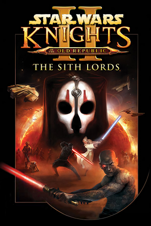

Xbox, Windows, macOS, Linux, iOS, iPadOS, Android, Nintendo Switch
Originally released on December 6th, 2004 for the original Xbox, KOTOR II was developed by Obsidian Entertainment. LucasArts initially gave BioWare the opportunity to make a sequel but they declined due to the severe time constraints that LucasArts wanted (about 14 months) and other projects they were working on, like Jade Empire. As a result, BioWare suggested Obsidian to develop it, since the two studios had a close working relationship on previous games.
KOTOR II expands upon the original's mechanics and presents a darker, more philosophical narrative that deconstructs traditional Star Wars themes. Set five years after the events of KOTOR, the game explores the nature of the Force itself through morally complex characters and situations.
The story follows the Jedi Exile as she reconnects with the Force and navigates a galaxy torn apart by war. The game features returning locations like Dantooine and introduces new worlds such as Peragus, Nar Shaddaa, and Onderon. Due to a rushed development cycle as mentioned previously, significant content was cut from the original release, but the modding community has worked to restore much of this material through The Sith Lords Restored Content Mod (TSLRCM).
Despite its troubled launch, KOTOR II has gained recognition for its mature storytelling and complex characters, particularly Kreia, one of gaming's most memorable mentors. The game maintains an active modding community that continues to enhance the experience through bug fixes, restored content, graphical improvements, and additional gameplay features.
KOTOR II Mod Guide - My personal mod guide for KOTOR II.
KOTOR II Scenario Generator - A web version of an old Java app I made several years ago. Requires JavaScript.
KOTOR Community Portal Spoiler Free Mod Guide - A spoiler free in-depth mod guide for KOTOR II on PC. While the guide is good, the site does push leftist identity politics.
KOTOR Community Portal Full Mod Guide - A full in-depth mod guide for KOTOR II on PC. Same as above but with more specific mod descriptions.
Obsidian Entertainment - Official developer website.
KOTOR II Fandom Wiki - Contains lots of information about KOTOR II.
KOTOR II Strategy Wiki - Contains even more information about KOTOR II.
PCGaming Wiki for KOTOR II - A great resource for running KOTOR II on modern systems.
Deadly Stream - The premier modding site for KOTOR II.
ModDB for KOTOR II - Website that hosts lots of mods for KOTOR II.
NexusMods for KOTOR II - Website that hosts even more mods for KOTOR II.
KOTOR II Manual - PDF copy of the KOTOR II manual.
The Sith Lords Restored Content Mod (TSLRCM) - Essential mod that restores massive amounts of cut content and fixes hundreds of bugs. This is considered mandatory for any playthrough.
K2 Cutscenes Rescaled - AI upscaled high resolution cutscenes.
KOTOR 2 Community Patch - Additional bug fixes and improvements beyond TSLRCM.
Ultimate Character Overhaul -Redux- - High resolution retexture of every character and equipment items in the game.
High Quality Skyboxes II - High resolution skybox textures.
Steam Grid DB (KOTOR II) - Contains lots of cool options for artwork that can be used in your Steam library.